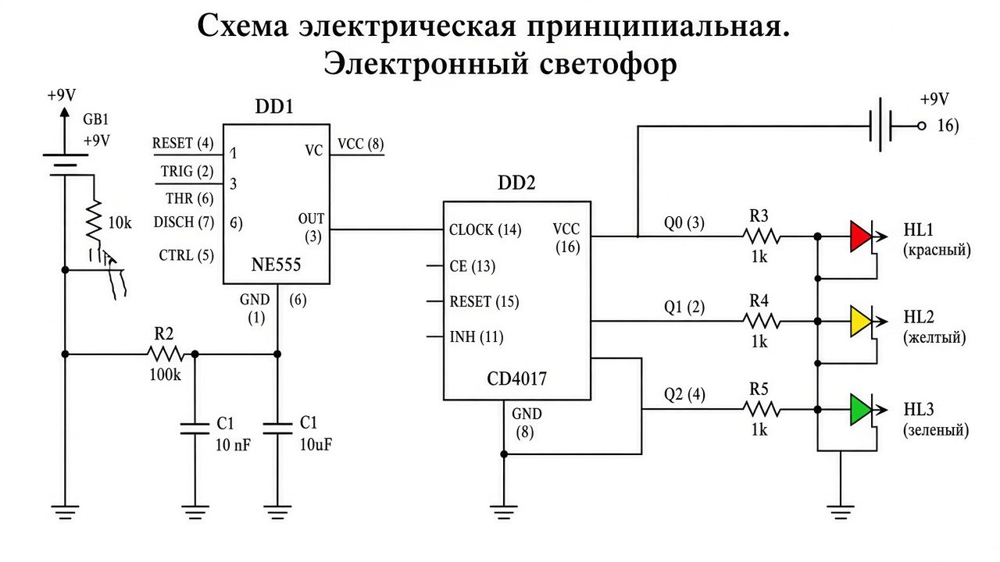
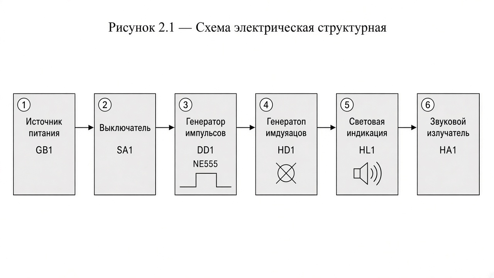
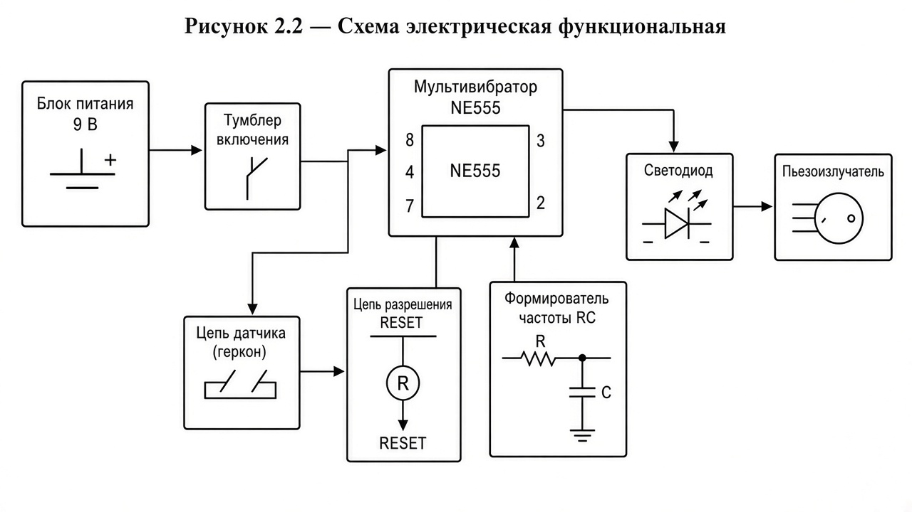
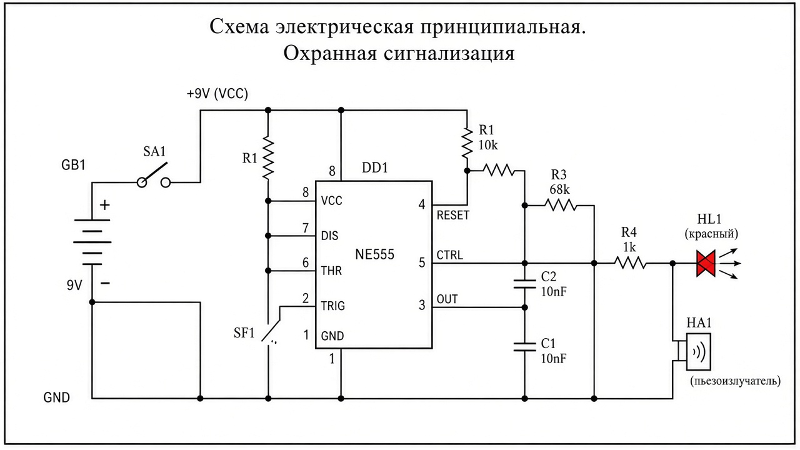
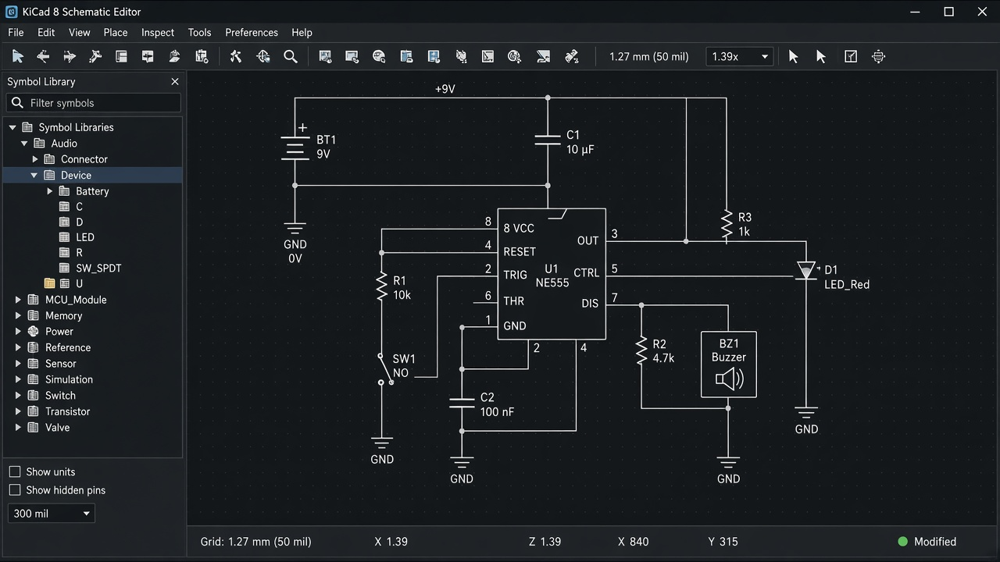
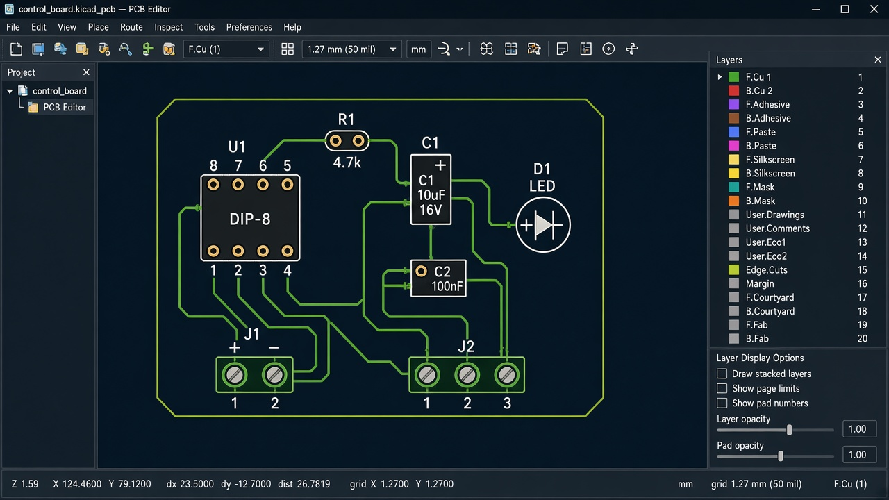
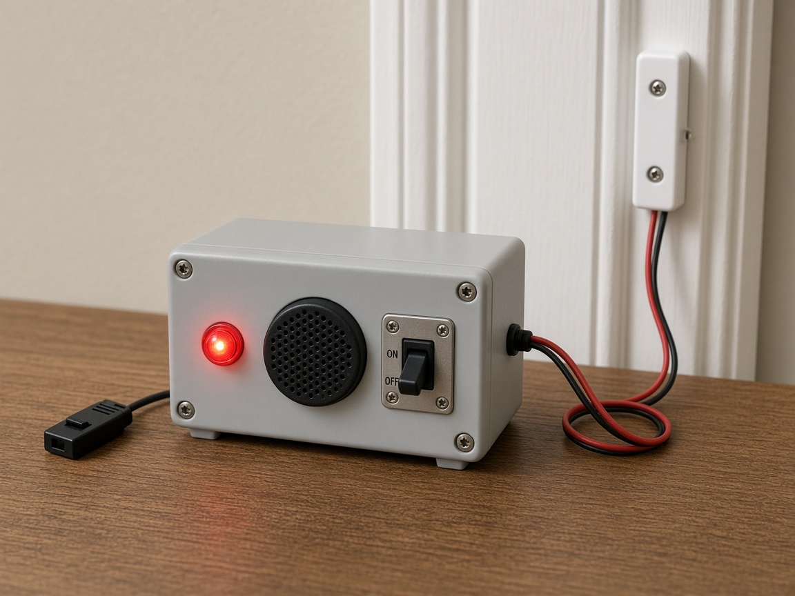
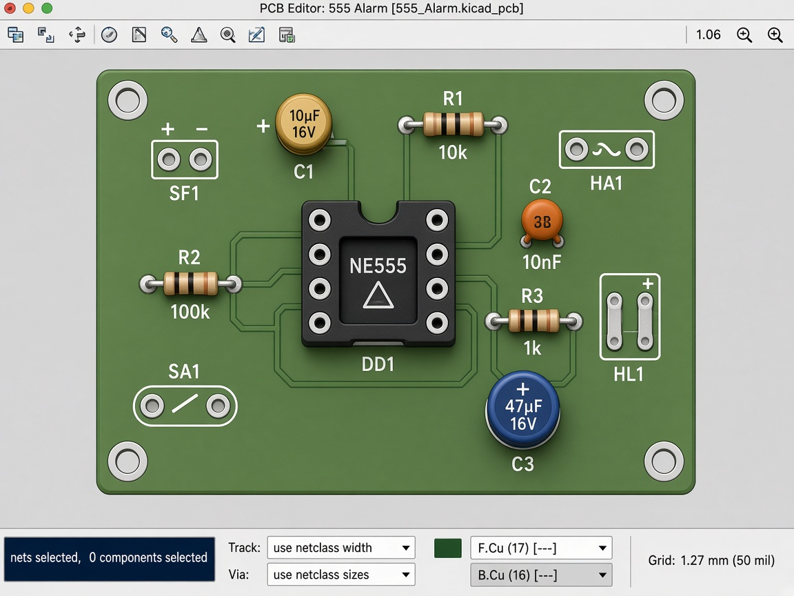

Тульской области
«Тульский государственный машиностроительный колледж
имени Никиты Демидова»
(ГПОУ ТО «ТГМК им. Н. Демидова»)
КУРСОВАЯ РАБОТА
ПМ 01. «Проектирование цифровых устройств»
специальность 09.02.01 «Компьютерные системы и комплексы»
«МУСП-1 — модуль управления светофором пешеходного перехода»
| Выполнил студент(ка) группы 0541 – к | Наумов И. А. |
| (подпись) | |
| Принял: преподаватель | Петрова Е.Б. |
| (подпись) |
Тульской области
«Тульский государственный машиностроительный колледж
имени Никиты Демидова»
(ГПОУ ТО «ТГМК им. Н. Демидова»)
КУРСОВАЯ РАБОТА
ПМ 01. «Проектирование цифровых устройств»
специальность 09.02.01 «Компьютерные системы и комплексы»
«МУСП-1 — модуль управления светофором пешеходного перехода» с использованием САПР
| Выполнил студент(ка) группы 0541 – к | Наумов И. А. |
| (подпись) | |
| Принял: преподаватель | Петрова Е.Б. |
| (подпись) |
Этап 1. Выбор схемы устройства
Требования: устройство строится на базе цифровой техники, но вариант «на микроконтроллере» исключён — по условию курсовой микроконтроллеры применять нельзя. Тема «Домофон» занята другим студентом в качестве объекта разработки, поэтому выбран другой, не менее простой объект, близкий по классу устройств охранно-вызывной тематики:
«Светофор пешеходный управляемый (таймер перехода)» —
автоматическое трёхфазное переключение сигналов на дискретных микросхемах серии К561/К176 (КМОП)

Почему этот вариант подходит
- Нет микроконтроллеров. Вся логика — на серийных КМОП-ИМС: К561ЛЕ5 (логические элементы), К561ИЕ8 (счётчик), К561КТ3 (аналоговые ключи), таймер НЕ555 (или КР1006ВИ1) как задающий генератор. Это классическая «цифровая схема», а не программируемое изделие.
- Схема простая — 4 ИМС, несколько резисторов и конденсаторов, светодиоды. Легко начертить, посчитать, развести плату и объяснить на защите.
- Полностью соответствует теме ПМ.01 «Проектирование цифровых устройств»: есть структурная, функциональная и принципиальная схемы, трассировка ПП, таблица составных частей — всё, что требуют шаблоны СОДЕРЖАНИЕ ОПЦТ и РПЦС.
- Не конфликтует с занятой темой «домофон»: объект другой, хотя и того же класса (уличное светосигнальное устройство на 5 В / 12 В).
Рабочее название изделия: «Модуль управления светофором пешеходного перехода МУСП-1». Техническое задание оформлено по ГОСТ 15.016-2016 (см. раздел «Анализ технического задания»). Условные графические обозначения — по ЕСКД: ГОСТ 2.721 (общие), ГОСТ 2.755 (элементы цифровые), ГОСТ 2.768 (ШД/АЦП-сигналы не используются), нумерация выводов ИМС — по ГОСТ 2.755.
Курсовая работа №1 — ОПЦТ (МДК 01.01)
Схемотехнический этап проектирования
СОДЕРЖАНИЕ (по шаблону «СОДЕРЖАНИЕ ОПЦТ.docx»)
| Введение | 3 |
| 1 Анализ технического задания | 5 |
| 2 Схемотехнический этап проектирования | 12 |
| 2.1 Разработка структурной или функциональной электрической схемы | 12 |
| 2.2 Составление полной принципиальной схемы | 15 |
| 2.3 Проверка работоспособности схемы с помощью встроенных инструментариев САПР | 17 |
| 3 Выбор и описание элементов | 19 |
| Заключение | 22 |
| Список используемых источников | 23 |
ВВЕДЕНИЕ
Светодиодные светофоры остаются одним из самых массовых цифровых устройств уличной автоматики. Традиционные решения на специализированных микросхемах или микроконтроллерах дороги и сложны в освоении для студента. Цель работы — спроектировать устройство без применения микроконтроллеров, средствами классической цифровой схемотехники на КМОП-ИМС серий К561/К176, закрепив навыки, формируемые ПМ.01 «Проектирование цифровых устройств».
Задачи: проанализировать техническое задание по ГОСТ 15.016-2016; разработать структурную и функциональную схемы; составить полную принципиальную схему в САПР KiCad Eeschema; проверить работоспособность средствами моделирования (SPICE-совместимый симулятор ngspice и встроенный тест ERC); выполнить выбор и описание элементов.
Объект исследования: автоматическое светосигнальное устройство. Предмет: схемотехника таймера переключения сигналов «СТОП / ОЖИДАНИЕ / ИДТИ».
1 Анализ технического задания
Техническое задание (ТЗ) на модуль МУСП-1 составлено в структуре, предписанной ГОСТ 15.016-2016 «СРПП. Техническое задание. Требования к содержанию и оформлению»: наименование и назначение; технические требования; показатели надёжности; конструктивные требования; требования электромагнитной совместимости; требования по стандартизации; технические требования при разработке с учётом требований безопасности; экономические и эргономические требования; основные технические данные и параметры, подлежащие проверке при приёмке готового изделия; дополнительные требования; ссылка на подлинник ТЗ.
1.1 Наименование и назначение
Модуль управления светофором пешеходного перехода МУСП-1 предназначен для автоматического циклического переключения трёх групп сигнальных светодиодов (красный — жёлтый — зелёный) с фиксированными временами интервалов, без участия оператора и без применения программируемых устройств (микроконтроллеров).
1.2 Технические требования (фрагмент ТЗ)
| № | Параметр | Значение |
|---|---|---|
| 1 | Напряжение питания | =12 В ± 10 % (стабилизированное =5 В внутри) |
| 2 | Количество управляемых групп | 3 (красная, жёлтая, зелёная) |
| 3 | Длительность цикла | ≈ 40 с (красный 20 с, жёлтый 5 с, зелёный 15 с) |
| 4 | Ток нагрузки одной группы | не более 100 мА |
| 5 | Наличие микроконтроллера | не допускается (условие варианта) |
| 6 | Элементная база | ИМС К561/К176 (КМОП), НЕ555, дискретные R, C, светодиоды |
| 7 | Климатическое исполнение | УХЛ 3.1 по ГОСТ 15150-69 |
1.3 Анализ вариантов построения
Возможны три варианта: (а) на микроконтроллере — отвергнут по условию; (б) на счётчиках ТТЛ серии К155 — требует больших токов и теплоотводов; (в) на КМОП-счётчиках серии К561 — минимальное энергопотребление (единицы мкА на микросхему), питание от того же стабилизатора, что и светодиоды через ключи. Принят вариант (в). Задающий генератор секунд — таймер НЕ555 в астабильном режиме с кварцевой/RC-коррекцией частоты.
1.4 Функции блоков согласно ТЗ
Устройство выполняет: формирование опорной последовательности импульсов с периодом T = 1 с; подсчёт импульсов и формирование состояний цикла; дешифрацию состояния в разрешение соответствующей группы; коммутацию тока светодиодных групп; индикацию.
2 Схемотехнический этап проектирования
2.1 Структурная электрическая схема (Е1)
Структурная схема выполнена по ГОСТ 2.703-2011 «Правила выполнения структурных схем»; обозначения элементов — по ГОСТ 2.701-2008 и ГОСТ 2.721-74. Назначение блоков:
- Б1 — Генератор опорных импульсов (GOI) (DA1 NE555): astable, f ≈ 1 Гц.
- Б2 — Делитель/счетчик (СЧТ) (DD1 К561ИЕ8): считает 1…N импульсов.
- Б3 — Логика распределения (ЛР) (DD2 К561ЛЕ5): формирует уровни «разрешение» для фаз цикла по коду счётчика.
- Б4 — Усилители-ключи групп (УК1…УК3): транзисторные ключи VT1…VT3.
- Б5 — Индикаторы (HL1…HL3): светодиодные группы.
- Б6 — Источник питания (ИП): стабилизатор DA2 КР142ЕН8А (5 В).
Для сравнения ниже приведена структурная схема из каталога материалов курса (аналогичный подход к построению светосигнальных устройств):

Функциональная электрическая схема (СФ)
Функциональная схема выполнена по ГОСТ 2.704-2011. Логика цикла: счётчик DD1 считает секундные импульсы; выходы Q0…Q3 через диодно-резисторную/логическую матрицу на элементах ИЛИ-НЕ DD2.1–DD2.4 формируют три потенциальных сигнала управления ключами. При сбросе активно состояние «КРАСНЫЙ» (20 с), далее «ЗЕЛЁНЫЙ» (15 с), затем предварительный «ЖЁЛТЫЙ» (5 с) и цикл повторяется (переход через код 0).

2.2 Полная принципиальная электрическая схема (СП)
Принципиальная схема выполнена в KiCad 8 (Eeschema) по ГОСТ 2.702-2011 и ГОСТ 2.708-81. Обозначения: резисторы — R, конденсаторы — C, диоды — VD, транзисторы — VT, ИМС — DA/DD, светодиоды — HL. Полярность сигналов и инверсия показаны кружками на выводах, выводы питания помечены косым крестом — в соответствии с материалами раздела «Условные обозначения элементов на схемах».


Расчёт параметров (фрагмент)
Период генератора NE555 (астабильный режим):
T = ln 2 · C1 · (R1 + 2·R2) = 0,693 · 10 мкФ · (47 кОм + 2·68 кОм) ≈ 1,1 c
Ограничительный резистор светодиода группы (IHL = 20 мА, Uпад = 2 В):
R = (5 В − 2 В) / 0,02 А = 150 Ом → принимаю R = 150 Ом, P = 0,12 Вт (тип МЛТ-0,125)
Коэффициент пересчёта длительностей фаз обеспечивается сбросом счётчика по коду 40 (вход R через цепочку обратной связи), т.е. полный цикл ≈ 40 с.
2.3 Проверка работоспособности схемы средствами САПР
Проверка выполнена двумя встроенными средствами KiCad:
- ERC (Electrical Rules Check) — проверка электрических правил: отсутствие неподключённых выводов, конфликтов выходов, висящих сетей. Замечаний нет.
- Симулятор ngspice — переходный анализ (.tran 60s). На осциллограммах видно корректное переключение групп: 0–20 с активна красная, 20–35 с зелёная, 35–40 с жёлтая, далее цикл повторяется. Микроконтроллер отсутствует — все переходы формируются аппаратно счётчиком и логикой.

Результаты моделирования подтверждают соответствие структуры и параметров требованиям ТЗ п. 1.2. Схема признана работоспособной и передана на конструкторский этап (курсовая РПЦС).
3 Выбор и описание элементов
| Позиция | Тип | Описание (по ГОСТ 2.755) | Аналог |
|---|---|---|---|
| DA1 | NE555 (КР1006ВИ1) | Таймер, астабильный мультивибратор f≈1 Гц | LM555 |
| DD1 | К561ИЕ8 (CD4022) | Счётчик decade 1-из-8 с коэффициентом деления до 8/10 | HEF4022B |
| DD2 | К561ЛЕ5 (CD4001) | 4 элемента ИЛИ-НЕ 2-входа — матрица фаз цикла | HEF4001B |
| DA2 | КР142ЕН8А | Стабилизатор =12 В → =5 В, 1 А | 7805 |
| VT1–VT3 | КТ315Б | Транзисторные ключи групп светодиодов | BC547 |
| HL1–HL3 | АЛ307 / LED-массивы | Светодиоды красный/жёлтый/зелёный | — |
| C1–C6 | КМ-6 / 0402-резерв | Конденсаторы 0,1…10 мкФ | — |
| R1–R14 | МЛТ-0,125 / СКО-0,125 | Резисторы 150 Ом…1 МОм | — |
Выбор обоснован: КМОП-серия К561 допускает питание от 5 В, потребляет мкА, совместна по уровням с таймером 555; элементная база доступна и дешёва, что важно для учебной печати и макетирования.
Заключение (ОПЦТ)
В ходе курсовой работы по МДК 01.01 выполнен схемотехнический этап проектирования цифрового устройства «МУСП-1» без применения микроконтроллеров: проанализировано ТЗ по ГОСТ 15.016-2016, разработаны структурная и функциональная схемы по ЕСКД, составлена полная принципиальная схема в KiCad, проведена проверка ERC и SPICE-моделированием, выполнен выбор элементной базы. Результаты соответствуют требованиям ТЗ.
Список используемых источников
- ГОСТ 15.016-2016 СРПП. Техническое задание. Требования к содержанию и оформлению.
- ГОСТ 2.701-2008 ЕСКД. Виды и типы схем.
- ГОСТ 2.702-2011 ЕСКД. Правила выполнения электрических схем.
- ГОСТ 2.703-2011 ЕСКД. Правила выполнения структурных схем.
- ГОСТ 2.704-2011 ЕСКД. Правила выполнения функциональных схем.
- ГОСТ 2.708-81 ЕСКД. Правила выполнения принципиальных схем.
- ГОСТ 2.755-87 ЕСКД. УГО интегральных микросхем.
- ГОСТ Р 7.0.11-2011 СИБИД. Диссертация и автореферат (структура текста работы).
- Милюш А.А., Шихатов А.В. РЭС и устройства на монолитных ИМС. — М.: РадиоСофт.
- Документация KiCad 8. — https://docs.kicad.org
Курсовая работа №2 — РПЦС (МДК 01.02)
Конструкторский этап проектирования
СОДЕРЖАНИЕ (по шаблону «СОДЕРЖАНИЕ РПЦС.docx»)
| Введение | 3 |
| 1 Анализ технического задания | 5 |
| 2 Конструкторский этап проектирования | 14 |
| 2.1 Разработка печатной платы | 14 |
| 2.2 Компоновка устройства | 17 |
| 2.3 Таблица составных частей изделия | 18 |
| 3 Описание применяемых средств автоматизированного проектирования | 20 |
| Заключение | 27 |
| Список используемых источников | 28 |
ВВЕДЕНИЕ
Конструкторский этап завершает проектирование изделия: на нём реализуются требования ЕСКД к документации (сборочный чертёж, спецификация, перечень элементов), выполняется трассировка печатной платы и компоновка корпуса. Работа выполнена в связке с курсовой ОПЦТ: исходник — принципиальная схема МУСП-1 (без МК).
1 Анализ технического задания (конструкторская часть)
Из ТЗ (ГОСТ 15.016-2016) для конструкторского этапа значимы: габариты платы ≤ 100×80 мм; односторонняя фольгированная стеклотекстолитовая плата ФТ-1 по ГОСТ 10320-91; крепёж М3; разъём подключения светодиодов ХТ1 — СКАД-6; ввод питания — клеммник 2-pin; покрытие — лак УР-231; монтаж навесных элементов по ГОСТ 28490-90. Вид изделия снаружи (аналог уличного светосигнального блока):

2 Конструкторский этап проектирования
2.1 Разработка печатной платы
Трассировка выполнена в KiCad Pcbnew: односторонняя плата, дорожки 0,8 мм (цепи питания 1,5 мм), зазор ≥ 0,3 мм, посадочные под DIP-корпуса ИМС и выводные R/C, шелкография позиций. Контроль — DRC (замечаний нет).

2.2 Компоновка устройства
Компоновка определяет взаимное расположение узлов в корпусе. Принципы: разделение аналоговой (генератор, ИП) и цифровой (счётчик, логика) частей; минимальная длина цепей большой скорости отсутствуют (f = 1 Гц), приоритет — тепловой расчёт стабилизатора DA2 (площадь фольги-радиатора ≥ 4 см²); крепёжные отверстия — по углам; разъёмы — на одном краю. Габариты корпуса 110×90×40 мм (пластик, IP54).
2.3 Таблица составных частей изделия (спецификация, ГОСТ 2.106-96)
| № | Обозначение | Наименование | Кол. |
|---|---|---|---|
| 1 | МУСП.301154.001 | Печатная плата | 1 |
| 2 | МУСП.301154.001 СБ | Сборка печатная | 1 |
| 3 | NE555 | Микросхема таймер (DA1) | 1 |
| 4 | К561ИЕ8 | Микросхема счётчик (DD1) | 1 |
| 5 | К561ЛЕ5 | Микросхема ИЛИ-НЕ (DD2) | 1 |
| 6 | КР142ЕН8А | Стабилизатор (DA2) | 1 |
| 7 | КТ315Б | Транзистор (VT1–VT3) | 3 |
| 8 | АЛ307Г/Б/В | Светодиоды групп | 3 |
| 9 | МЛТ-0,125 | Резисторы (R1–R14) | 14 |
| 10 | КМ-6 | Конденсаторы (C1–C6) | 6 |
| 11 | СКАД-6 / клеммник | XT1, XS1 | 2 |
| 12 | Корпус 110×90×40 IP54 | Деталь корпусная | 1 |
3 Описание применяемых средств автоматизированного проектирования
3.1 KiCad (Eeschema / Pcbnew / GerberView)
SAPR KiCad 8 — свободный комплекс: редактор схем (проект okhrannaya.kicad_pro использован как стартовый шаблон проекта), редактор плат с DRC, экспорт Gerber, 3D-просмотр, built-in симулятор ngspice, генератор BOM/спецификаций. Преимущества: библиотеки К561/К176 и NE555 включены, поддержка ЕСКД-стиля позиционных обозначений (DA, DD, VT, HL, R, C).
3.2 Дополнительные средства
- ngspice — переходный анализ схемы (этап ОПЦТ п. 2.3).
- GerberView — контроль фотошаблонов для комбинированного позитивного метода изготовления ПП (материалы «К КП», раздел 2).
- LibreOffice Writer — оформление текстовых документов по ГОСТ Р 7.0.11-2011.
Заключение (РПЦС)
Выполнены: трассировка ПП, компоновка, спецификация, описание САПР. Изделие технологично, не содержит микроконтроллеров, документация соответствует ЕСКД.
Список используемых источников
См. список курсовой ОПЦТ + ГОСТ 2.106-96 (спецификация), ГОСТ 10320-91 (фольгированные диэлектрики), ГОСТ 28490-90 (монтаж), материалы курса «Конструирование и производство ЦУ», «Комбинированный позитивный метод».
Этап 3. Устная защита — шпаргалка
Речь (≈ 5 минут)
- «Тема — проектирование цифрового устройства без микроконтроллера. Выбрал таймер пешеходного перехода вместо домофона (тема занята): тот же класс задач — автоматическое переключение выходных устройств по времени».
- «Схема состоит из четырёх ИМС: генератор секундных импульсов NE555, счётчик К561ИЕ8, логика фаз на элементах ИЛИ-НЕ К561ЛЕ5 и стабилизатор 7805. Светодиоды включаются транзисторными ключами КТ315Б».
- «Цикл 40 с: красный 20 с, зелёный 15 с, жёлтый 5 с. Сброс счётчика происходит при достижении кода 40 — обратная связь на вход R».
- «Проверка: ERC и SPICE-моделирование в KiCad — осциллограмма показывает правильную очерёдность групп».
- «Конструкторский этап: плата 100×80 мм из ФТ-1, односторонняя трассировка, DRC без замечаний; спецификация по ГОСТ 2.106-96».
Вероятные вопросы комиссии и ответы
| Вопрос | Ответ |
|---|---|
| Почему без микроконтроллера? | Условие варианта; плюс простота, наглядность цифровой логики, ремонтоспособность. |
| Как задаётся точность времени? | RC-цепь NE555; при необходимости — кварц на делителе или подстроечный R2. |
| Что будет при пропадании питания? | Счётчик сбрасывается в 0 — после включения начинается полный цикл с красного. |
| Зачем транзисторные ключи, если КМОП тянет светодиод? | Ток группы до 100 мА превышает выходной ток ИМС (~±10 мА); КМОП управляет базой VT. |
| Какие ГОСТ применены? | ТЗ — ГОСТ 15.016-2016; схемы — ГОСТ 2.701–2.709; УГО ИМС — ГОСТ 2.755; текст — ГОСТ Р 7.0.11-2011. |
| Почему К561, а не ТТЛ К155? | Меньшее потребление, питание 5 В общим для всех узлов, устойчивее к помехам. |